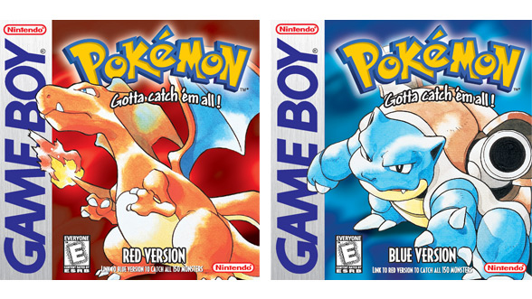

| Game |
Platform |
Description |
 Pokémon Trading Card Game
Pokémon Trading Card Game
|
Physical Trading Cards |
The Pokémon Trading Card Game (ポケモンカードゲーム, Pokemon Kādo Gēmu, "Pokémon Card Game"), abbreviated as PTCG or Pokémon TCG, is a collectible card game developed by Creatures Inc. based on the Pokémon franchise. Standard gameplay cards include Pokémon cards, energy cards, trainer cards, and stadium cards, a variant of trainer cards. Pokémon cards contain data about the creature's type,and where it came from, attacks, ability, and HP as well as any special effects the cards have on the game. Basic (unevolved) Pokémon can change into their evolved forms during the game by playing subsequent evolution cards in the deck. Energy cards can be attached to Pokémon cards to power up attacks, and trainer cards can be used for different effects on the game. Card effects often rely on elements of luck, such as dice rolls and coin tosses, to decide an outcome. Counters are stacked on top of cards in play to indicate damage dealt, and players may choose to put their Pokémon cards on a bench to switch to a different attacker.
|
|

Pokémon Red and Blue
|
Nintendo DS |
Pokémon Red Version and Pokémon Blue Version are reprogrammed versions of Pocket Monsters Red, Green, and Blue. They are the first Pokémon games ever released outside of Japan. In the titles, the player longs to become the greatest Pokémon Trainer by capturing and raising species known as Pokémon. In the games there were 151 Pokémon species that could be caught. Pokémon is a role-playing game. In a departure from traditional RPGs, however, the player's Pokémon fight instead of the player himself with one of the main goals to collect all the available monsters. There are 151 different types of Pokémon in the game that the player can obtain through several different means, primarily by capturing and trading. While the player can possess all 151 Pokémon, he or she can only carry a maximum of six at a time for use in battles, with the rest obtained going to the PC. Some Pokémon are exclusive to one version and require trading via link cable. By leveling up the player's Pokémon, they get stronger, learn new moves and certain ones can evolve. Others require an Evolutionary Stone or trading to evolve.
|
 Pokémon GO!
Pokémon GO!
|
iOS/Android |
Pokémon Go (stylized as Pokémon GO) is a 2016 augmented reality (AR) mobile game, part of the Pokémon franchise, developed and published by Niantic in collaboration with Nintendo and The Pokémon Company for iOS and Android devices. It uses mobile devices with GPS to locate, capture, train, and battle virtual Pokémon, which appear as if they are in the player's real-world location. The game is free-to-play; it uses a freemium business model combined with local advertising and supports in-app purchases for additional in-game items. The game launched with around 150 species of Pokémon, which had increased to around 870 by late 2024. |